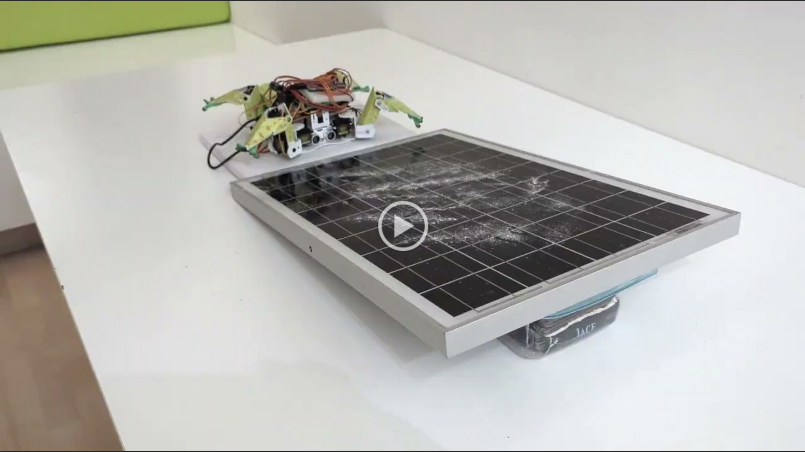

PanelPal: A Lunar Robot for Cleaning Solar Panels
Welcome to the PanelPal project page! This robot was developed in a high school product engineering class using a PiCrawler kit as the foundation. PanelPal is designed to crawl across solar panels on the lunar surface and clean them with a custom 3D-printed brush mechanism. To adhere to the smooth panel surfaces, it uses gecko-inspired adhesive on its 3D-printed feet.
Project Resources
- Python Code (folder containing the robot control scripts)
- 3D Models (folder with STL files for the 3D-printed parts)
Watch PanelPal in Action
Click the thumbnail below to see the robot crawl and brush in real time!
Project Presentation
Below is an embedded slideshow (PDF) detailing the entire project development process. Use the arrows in the viewer to navigate through the slides.
How It Was Built
Hardware: PiCrawler kit as a base platform, modified with custom 3D-printed feet featuring gecko adhesive for lunar panel traction. A 3D-printed brush assembly is mounted on the robot’s front to remove dust.
Software: Python scripts (in the code folder) control the motors and servos that drive the feet and operate the brush mechanism.
3D Files: All custom parts (feet, brush attachment) can be found in the 3D Models folder, ready for printing.
Get in Touch
Have questions, suggestions, or want to replicate this project? Feel free to open an issue or submit a pull request on the GitHub repository.